Dominique Makowski and Ana Neves
School of Psychology, University of Sussex
Dominique Makowski http://orcid.org/0000-0001-5375-9967 https://orcid.org/0000-0001-5375-9967
Ana Neves http://orcid.org/0009-0006-0020-7599
Ana Neves https://orcid.org/0009-0006-0020-7599
Author roles were classified using the Contributor Role Taxonomy (CRediT; https://credit.niso.org/) as follows: Dominique Makowski: conceptualization, data curation, formal analysis, funding acquisition, investigation, methodology, project administration, resources, software, supervision, validation, visualization, writing – original draft, and writing – review & editing. Ana Neves: project administration, data curation, formal analysis, investigation, visualization, writing – original draft, and writing – review & editing
Correspondence concerning this article
should be addressed to Dominique Makowski, School of Psychology, University of
Sussex, Email: D.Makowski@sussex.ac.ukD.Makowski@sussex.ac.uk
Visual illusions highlight how easily our
conscious experience can be altered with respect to perceptual reality. Despite
sharing in-principle mechanisms with phenomenological control, i.e., the
ability to alter our perceptual experience to match task demands or
expectations, research tying the two remains scarce. This study aims to replicate
and expand Lush et al. (2022) reporting an absence of correlation between
phenomenological control (measured using the Phenomenological Control Scale)
and illusion sensitivity to different illusion types. [N participants were
recruited in an online study. Results will be added in the final version of the
manuscript].This study aimed to replicate and extend Lush et
al., (2022) by testing for a relationship between phenomenological control and
illusion sensitivity across multiple illusion types, assessing the role of
higher-level (top-down) processes. It also examines associations between visual
illusion sensitivity and psychoticism to assess the potential contribution of
lower-level effects (e.g., weak priors). Five hundred participants were
recruited in an online study using an illusion-based perceptual decision paradigm
(Illusion Game; Makowski et al., 2023) measuring sensitivity to three visual
illusions (Ebbinghaus, Müller-Lyer, Vertical-Horizontal), alongside the
Phenomenological Control Scale and personality measures. Bayesian correlation
analyses provided evidence supporting the absence of a relationship between
phenomenological control and illusion sensitivity, replicating prior findings.
No evidence was also found for an association between illusion sensitivity and
psychoticism. These findings support the hypothesis that visual illusions are
to some degree cognitively impenetrable, and suggest that illusion
susceptibility operates independently of higher-level control over subjective
experience. However, low consistency across illusion measures highlights important
methodological limitations in capturing individual differences related to
illusion sensitivity.
Keywords: illusion sensitivity, visual illusions, phenomenological control, suggestibility, hypnotizability
Visual Illusions are an interesting type
of stimuli highlighting the ease with which our phenomenological conscious
experience can become dissociated from physical reality. Their robust and
reliable effect makes them useful stimuli to explore how perception is
constructed and shaped, and several theoretical models have been put forth to
explain how they work. In particular,
illusions have been reframed using a predictive coding account of perception
(e.g., Notredame et al., 2014; Nour & Nour, 2015)Notredame et al., 2014;
Nour &
Nour, 2015) in which the
brain optimally combines, using some flavour of Bayesian inference, perceptual
inputs with prior knowledge to make sense of ambiguous environments (Friston,
2010).(Friston,
2010).
Such computational model(s) propose to
conceptualize illusions as stimuli providing weak or conflicting sensory
evidence (Gershman et al., 2012; Sundareswara &
Schrater, 2008)(Gershman
et al., 2012; Sundareswara & Schrater,
2008) that bias
perception toward prior knowledge. In other words, the weight of priors, in the
form of perceptual knowledge about the world (e.g., internalized rules of
perspective) is amplified when the sensory input is confusing. For instance, in
the Müller-Lyer illusion, we “compute” the two (actually identical) lines as
being of different lengths because the line flanked with converging fins is
misinterpreted as being further away (Notredame et al., 2014).(Notredame et al., 2014).
In this context, measuring sensitivity to illusion can be operationalized as
indexing the parameters of the Bayesian inference process (e.g., prior
precision).
These accounts also provide a compelling
framework to explain existing findings reporting interindividual variability in
the sensitivity to illusions. Indeed, several studies suggest a potential link
with psychopathology, in particular schizophrenia (Costa et al., 2023) and
autism (Gori et al., 2016),(Costa et al., 2023)
and autism (Gori et al.,
2016), in which the
reported lower sensitivity to illusions has been attributed to a diminished
influence of top-down processes such as prior knowledge (Mitchell et al., 2010)(Mitchell et al., 2010)
and a greater emphasis on (i.e., precision of) sensory information (Palmer et
al., 2017).(Palmer
et al., 2017). Evidence
beyond psychopathology also suggests variability in the general population,
potentially correlated with personality traits such as agreeableness and honesthonesty-humility
(Makowski
et al., 2023),(Makowski
et al., 2023), as well as
cognitive abilities (Shoshina & Shelepin, 2014).(Shoshina & Shelepin, 2014).
However, the exact nature of this
interindividual variability and its potential origin remains unclear. The
somewhat mixed evidence in the literature regarding its generalizability and
strength could be related to the variety of the paradigms used and the type of
processes being mobilised (Makowski et al., 2021).(Makowski et al., 2021).
Indeed, traditional methods frequently focus on participant’s experience by
prompting them to assess the difference between two identical targets, estimate
the target’s physical properties, or adjust the targets to match a reference
stimulus (Todorović, 2020).(Todorović, 2020).
Relying on metacognitive judgments about one’s subjective experiences adds an
additional layer to the measure that might not be desired when attempting to
measure illusion sensitivity.
Moreover, paradigms often face challenges in diversifying the illusory effects
(i.e., using multiple stimuli to experimentally manipulate the strength of the
illusion) and the illusion types (i.e., using various illusions, such as
Müller-Lyer, Ebbinghaus, Delboeuf which might rely on a different admixture of
mechanisms), hindering the potential of obtaining a comprehensive, valid, and
reliable measure of illusion sensitivity.
The “Illusion Game” paradigm (Makowski et
al., 2023)(Makowski
et al., 2023) has been
recently developed to measure illusion sensitivity to various illusion types
through its behavioural impact (on response time and error rate) in a
perceptual decision task (where participants have to respond as fast as
possible; e.g., “which of the left or right circles is bigger”). The stimuli
for different classical illusions are created using the Pyllusion
software (Makowski et al., 2021),(Makowski et al., 2021),
which allows researchers to modulate the strength of the illusion as a
continuous dimension, independently from the difficulty of the perceptual task.
This paradigm, inspired by psychophysics, lends itself to the computational
modelling of illusion sensitivity through its interference
effect —an effect that disrupts an individual’s ability to accurately
discriminate between perceptual stimuli. This
approach aims to bypass some of the metacognitive processes involved in other
paradigms, offering a more direct and objective measure of how illusions
influence perceptual judgment.
Interestingly, the fact that inter-individual variability in illusion sensitivity seems to persist in this task suggests that it is not solely explained by metacognitive ability differences, and gives rise to the following question: is the variability in illusion sensitivity related to low-level perceptual processes (e.g., baseline precision of perceptual priors), or rather to the ability to actively control and “resist” the illusion in order to achieve the task at hand (higher-level modulation of the perceptual inference parameters). If the latter is true, then illusion sensitivity measured in contexts with strong task-demand characteristics, e.g., in paradigms where participants’ performance is explicitly or implicitly assessed (i.e., where there is an incentive to downplay the illusion effect) might correlate with one’s ability to alter one’s subjective experience following suggestions - a mechanism referred to as “phenomenological control”.
The idea that we are endowed with the
potential to unconsciously alter our subjective experience and distort reality
- even momentarily - to meet the goals at hand is not novel. While this
phenomenon has been historically often studied under the label of
“hypnotisability” - the tendency to alter our conscious experience to match
external demands (Lush et al., 2021),(Lush et al., 2021),
the term “phenomenological control” (PC) has been recently introduced to
disconnect this concept from the potentially negative associations with
hypnosis and the misconception that a hypnotic context is necessary for
responding to imaginative suggestions (Dienes et al., 2022).(Dienes et al., 2022).
To encourage the empirical exploration of
our ability and tendency to alter our phenomenological experience and further
accelerate investigations away from the hypnotic context, Lush et al. (2021)(2021)
adapted the Sussex-Waterloo Scale of Hypnotisability (SWASH, Lush et al.,
2018)Lush et al.,
2018) by removing all
its references to hypnosis, to measure trait phenomenological control. This newly developed phenomenological control
scale (PCS) consists of 10 imaginative suggestions followed by subjective
ratings for each suggestion and has demonstrated validity in online experiments
(Lush et al., 2022).(Lush et al., 2022).
Interestingly, Lush et al. (2022)(2022)
did test for a relationship between PC and illusion sensitivity using the
Müller-Lyer illusion (in which the arrangement of the arrowheads flanking two
lines makes them appear as having different lengths), and reported evidence in
favour of an absence of correlation between the two measures. This finding was
interpreted as indicative of the cognitive impenetrability of illusions,
implying that the effect is driven by low-level processes and therefore not
influenced by top-down mechanisms such as PC. Note
that both prior-knowledge and phenomenological control are considered top-down
processes, but the cognitive impenetrability hypothesis suggests that the
processes at stake for the illusions happen at a lower- encapsulated- level (in
the form of perceptual
priors).
The goal of this study is thus to replicate
the results from Lush et al. (2022)(2022)
pointing to an absence of a relationship between phenomenological control and
illusion sensitivity, by generalising them to a different illusion paradigm
that encompasses other illusion types. Additionally,
we will explore the relationship between psychoticism, as a proxy for
schizophrenia, and illusion sensitivity to assess the potential impact of
lower-level effects—such as weak priors observed in individuals with
schizophrenia (Costa et al., 2023)—(Costa et al., 2023)—on sensitivity to illusions. These analyses may offer
evidence clarifying whether inter-individual variability in illusion
sensitivity is driven by lower-level perceptual mechanisms or higher-level
cognitive processes (Table 1).
Study Design Table
|
Question |
Is there a correlation between trait phenomenological control (PC) and visual illusion (VI) sensitivity? Additionally, is there a relationship between VI sensitivity and the psychoticism facet of the PID-5, as a proxy for schizophrenia-related traits? |
|
Hypothesis |
In
line with Lush et al. (2022), we hypothesise that there will be evidence
supporting the absence of a relationship between PC and VI sensitivity. Based
on Makowski et al. (2023) and prior work on weak priors in schizophrenia, we
hypothesise that higher psychoticism scores will be |
|
Sampling Plan |
The goal is to recruit around 500 adult English speakers using Prolific. This sample size is based on the ones used in Lush et al., 2021 and Lush et al., 2022 that we aim at replicate. |
|
Analysis Plan |
Bayesian correlations will be conducted using the BayesFactor::correlationBF() function, with a medium prior (r-scale = 1/3), separately for: 1) PC scores and VI sensitivity (error rate and IES), across all three illusion types; and 2) Psychoticism facet scores from the PID-5 and VI sensitivity scores, across all three illusion types. |
|
Rationale for Deciding the Sensitivity of the Test |
For the PC–VI sensitivity relationship, we will interpret BF₁₀ ≤ 1/3 as evidence against a relationship, in line with Lush et al. (2022). For the psychoticism–VI sensitivity relationship, BF₁₀ > 3 will be interpreted as evidence supporting a relationship, following findings by Makowski et al. (2023). |
|
Interpretation Given Different Outcomes |
If
there is no evidence for a PC–VI relationship across all three illusions, it
would support the hypothesis that VI sensitivity is independent from PC. If a
|
|
Theory That Could Be Shown Wrong by the Outcomes |
The cognitive impenetrability of visual illusions, which posits that illusion sensitivity is driven solely by low-level processes and is not influenced by top-down mechanisms such as phenomenological control. Conversely, a lack of association with psychoticism would challenge the view that low-level perceptual alterations underlie illusion sensitivity in non-clinical populations. |
We aim to recruit around 500 (in
line with the sample sizes used in Lush et al., 2021; Lush et al., 2022) adultFive hundred
English
native speakers with a desktop device using-speaking adults (Mean age =
38.6, SD = 13.1, range: [18, 75], 50% of women) were recruited via
Prolific (www.prolific.co).com) and completed the study
on a desktop device. Out of these participants, 2.8% reported having a doctoral
degree, 18.2% masters degree, 49.6% a bachelors degree, 27.4% a high school
degree and 2% other qualifications. Participants will bewere
first presented with an explanatory statement, and the consent
form, and cancould proceed by pressing a button to
confirm they have read and understood the information. This study has been
approved by the ethics board of the School of Psychology of the University of
Sussex (ER/ASF25/5).
Following the data exclusion steps (see Results section), the final sample included 444 participants for analyses related to the Müller-Lyer illusion, 445 for the Ebbinghaus illusion, and 446 for the Vertical-Horizontal illusion.
The experiment’s setup follows of the
born-open principle (De Leeuw, 2023).(De Leeuw, 2023),
and all its related material is available at https://github.com/RealityBending/IllusionGamePhenomenologicalControl.
The online experiment, implemented entirely using JsPsych (De Leeuw, 2015),(De Leeuw, 2015),
has its code stored on GitHub and will leverageleverages the
power of the platform to host the experiment for free. Participant’s raw data
files (containing identifiers) are automaticallywere
stored in a private OSF repository. The , but deanonimized using a
publically available preprocessing and analysis scripts, as well
as the script. The resulting anonymized data,
will
beand the analysis reports, are
available directly on GitHub, ensuring the
transparency and reproducibility of all the analysis steps.
Participants will beFollowing
the informed consent, participants were presented with a consent
form followed by demographic questions (gender, education level,
age, and ethnicity). Although these
variables are not directly analyzed in the current study, they will beare used to provide a detailed and thorough
description of the sample (thus limiting potential over-generalization) and maximizing data reusability. Participants will then be administeredunderwent the Phenomenological Control Scale
(PCS) and the Illusion Game task (IG) in a
counterbalanced order.
Participants will bewere
asked to put on their headphones and await further auditory instructions. The
PCS procedure startsstarted with a
recorded introduction explaining that a series of tests willwould
be applied to evaluate how experiences can be created through imagination. This will
be, followed by 10 suggestions in a
fixed order (see Lush et al., 2021),Lush et al., 2021),
such as “now extend your arms ahead of you, with palms facing each other, hands
about a foot apart” and “as you sit comfortably in your chair with your eyes
closed, a picture of two balls will be displayed on the computer screen”. Once the 10 suggestions arewere completed, participants will bewere asked to rate their subjective experiences and
response to each suggestion on a 6-points Likert scale (from 0-5). The Phenomenological
control score
will be indexedcomputed by
averaging the scores from the 10 scales.
The taskIllsuion
Game task used in the current study is an adaptation of the one
used in Makowski et al. (2023)(2023)
to make it shorter, in which participants must make perceptual judgments (e.g.,
“which red line is the longer”) as quickly and accurately as possible. It includesincluded
3 illusion types, namely Ebbinghaus, Müller-Lyer, and Vertical-Horizontal (see Figure 1). In the original Illusion Game,
10 visual illusions were presented in two sets, following a practice trial, and
separated by two short questionnaires. Participants
completed a total of 1,340 trials, with the experiment lasting approximately 5548 minutes. In
the current procedure, only three illusions arewere used, selected based on the original study’s
findings that these illusions most strongly contribute to illusion sensitivity.
The study involved three visual illusions, in which participants were instructed to respond as quickly as possible without making errors. Each illusion included two manipulated parameters: strength (e.g., the angle of the outward- or inward-pointing arrow-like fins in the Müller-Lyer illusion) and difficulty (e.g., the difference in line lengths in the Müller-Lyer illusion).
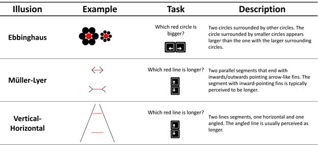
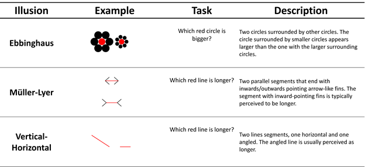
The procedure encompassesencompassed
2 sets of 80 trials for each illusion type, preceded
by a practice trial for each illusion. Each set will includeincluded,
in a random order, the 3 blocks of illusion types, in which trials arewere
separated by a fixation cross, temporally (uniformly sampled duration of 500 - 1000s1000ms)
and spatially jittered (around the centre of the screen in a radius of a 1 cm)
to attenuate its potential usefulness as a reference point. After each illusion
type block, an arbitrary score iswas presented
(computed as a scaled Inverse Efficiency Score) as a gamification mechanism to
increase motivation to perform to the best of one’s abilities. To mitigate for
the potential variability in the speed/accuracy trade-off, the instructions emphasizeemphasized
with equal weight to be fast and to avoid errors.
For each illusion type, two continuous
dimensions arewere orthogonally
manipulated namely task difficulty and illusion strength, so that each trial
corresponds to a unique combination, providing
an objectively correct answer for each trial. The use of these manipulations allows concise, standardised
reporting of illusion parameters and ensures our stimuli are fully reproducible
(see Makowski et al., 2021).Makowski et al., 2021).
Task difficulty corresponds to the
difficulty of the perceptual decision (e.g., if the task is to select the
longest red line, task difficulty corresponds to how the lines are objectively
different). Illusion strength corresponds to the degree to which the illusion
elements (e.g., the black arrow lines in Müller-Lyer) are interfering with the
aforementioned task. Note that the illusion effect can be either “incongruent”,
making the task more difficult by biasing
perceptual decisions toward the incorrect response or “congruent”, making the task easier by biasing decisions
toward the correct response (e.g., in the Müller-Lyer illusion, if the
outwards-facing arrowheads are placed on the longer line, identifying which
line is the longest becomes easier). Participants respondresponded
with a key arrow (left vs. right; or up vs. down), and their reaction
time (RT) and accuracy arewere recorded.
Visual illusion sensitivity will bewas
measured as the average error rate in the incongruent condition, and separately
for the 3 illusion types. Although the error rate is arguably a crude score,
which does not take into account the effect of varying illusion strength, the
interaction with task difficulty and the possible adjustments in response
strategy (speed-accuracy trade off), it is also the most simple and easy to
reproduce, hence its usage as our primary outcome for the current registered report. As a secondary exploratory outcome, the Inverse
Efficiency Score ([IES,; Townsend &and Ashby, 2014) will also be (2014)]
was computed. This metric
incorporates both speed and accuracy by dividing the mean reaction time of
correct responses by the proportion of correct responses, separately for each
illusion.
The two sets of 3 illusion blocks will bewere
separated by 2 short questionnaires acting as a break, namely the IPIP-6 (Sibley et
al., 2011),(Sibley
et al., 2011), measuring 6
personality traits with 24 analogue scales items, and the PID-5 (Krueger et
al., 2011),(Krueger
et al., 2011), measuring 5
maladaptive personality traits with 25 Likert scales items. These
questionnaires arewere included as
a way of providing a break between the two cognitively taxing blocks and
maintain paradigmatic consistency with previous studies (Makowski et al., 2023).(Makowski et al., 2023).
Additionally, the psychoticism subscale
of the PID-5 will bewas used to examine the correlation between
maladaptive traits and illusion sensitivity, evaluating the existence of the
link proposed in previous studies (Costa et al., 2023).(Costa et al., 2023).
The
phenomenological control scale will include several attention checks to
identify problematic participants. The task consists of various auditory and
visual exercises; at the outset, participants hear a voice say “helloHello” and are asked to select the corresponding
phrase from multiple options (i.e.g., “Hello,””, “Goodbye,””, “How are you,””, “Thank you”). Selecting an incorrect response indicates inattention to auditory
stimuli. In a subsequent exercise,
participants are instructed: “Open your eyes. You will see only two balls on
the screen… just two balls”. However,
three differently coloured balls are displayed. If a participant selects the response “no balls
were shown,”No Balls Were Presented”, it suggests they failed to attend to both the
auditory instruction and the visual stimuli. In another task, participants are instructed to press the spacebar
six times. Pressing it fewer than
five times within the allotted time indicates a failure to follow the auditory
instructions. Participants who
fail any one of these will be excluded from further analysis. Finally, the reliability of the PCS will be
assessed by computing Cronbach’s alpha of its items (Cronbach,
1951).(Cronbach, 1951).
Outliers in the Illusion Game will be
identified based on participants’ performance. Specifically,
any participant exhibiting an error rate greater than 45% for any illusion type
will be considered to be responding at chance level (i.e., randomly) and
flagged accordingly. If this level
of performance occurs in the first block, the entire participant will be
excluded from analysis, as it suggests a failure to properly engage with the
task. However, if the elevated
error rate is observed only in the second block, this will be interpreted as a
loss of engagement or motivation (e.g., boredom due to task repetition).
In such cases, only the second block will
be discarded, allowing for estimation of illusion sensitivity based on the
valid data from the first block, albeit with reduced precision. To mitigate the risk of confounding effects
driven by extreme speed or accuracy strategies, participants whose RTs are
significantly slower than the group average (RT > 4 SD above the mean, based
on Makowski et al., 2023)Makowski et al., 2023) will be excluded from the analysis.
After removing problematic participants and trials, the outcome measures (PC
and VI sensitivity scores) will be computed.
To assess whether the illusions functioned as expected, stimuli will be categorized into three groups: Strong Illusion Strength & Incongruent, Mild Illusion Strength & Incongruent, and Congruent. The two outcome measures—error rate and IES—will be computed separately for each illusion and each illusion strength group. To evaluate differences between these conditions, two Bayesian t-tests will be conducted: one comparing the Congruent and Mild conditions, and the other comparing the Mild and Strong conditions. Significant differences in either IES or error rate across these comparisons will be taken as evidence that the illusions operated as intended.
Next,
to determine whether the Mild and Strong Illusion Strength groups can be
collapsed for further analysis, Bayesian correlations will be computed between
them for each illusion and outcome measure. If these correlations are sufficiently high (r
> .50, Cohen, 2013),Cohen, 2013), the groups will be collapsed and outcomes
recomputed across all relevant trials (i.e., by averaging across these groups).
If not, the groups will be analysed
separately. This step is necessary
because reaction time may not have a linear relationship with illusion strength
(Makowski et al., 2023),(Makowski et al., 2023), and collapsing the data without this check may
obscure meaningful differences. Finally,
reliability analyses will be conducted on all resulting indices, with
Cronbach’s alpha used to evaluate internal consistency across the three
illusion types.
Bayesian
correlations are then computed between PCS and illusion sensitivity scores -
with the resulting IES and error rate indices.
Following Lush et al. 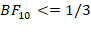 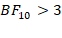(2022),(2022),
we expect to collect evidence against (BF10 <= 1/3(Makowski et al., 2023),(Makowski et al., 2023), we expect to find evidence (BF10 ≥
3
All Bayesian analyses will be conducted
using the BayesFactor package (Morey & Rouder, 2024).(Morey & Rouder, 2024).
For correlations, a medium shifted beta
prior will be applied (r-scale parameter set to 1/3), as recommended by Morey
and Rouder (2018),(2018), providing a balanced approach to estimating
effect sizes, without placing undue weight on larger effect sizes or
artificially inflating evidence for the null hypothesis. For t-tests, the ttestBF function will be used with a medium Cauchy prior on
the standardised effect size (r-scale = √2⁄2), corresponding to the
default for independent samples.
Data analysis will be carried out using R,
using tidyverse (Wickham et al., 2019)(Wickham et al., 2019)
and easystats (Lüdecke et al., 2020, 2022; Makowski et al., 2019,
2022; Patil et al., 2022).(Lüdecke et al., 2020,
2022;
Makowski et al., 2019,
2022;
Patil et al., 2022).
The analysis script and additional information are available at https://osf.io/da3u6/?view_only=247d4efa1afe456aa07662732946d4e6 [Note this
link will be replaced with the GitHub page of the current project upon
completion of the review process to ensure continued anonymisation].github.com/RealityBending/IllusionGamePhenomenologicalControl.
This section will be completed
after data is collected.
Registered exclusion criteria based on task performance and reaction times were applied. Specifically, participants with mean reaction times exceeding 4 SDs above the group mean were flagged. In accordance with the registered protocol, participants were fully excluded if this occurred in the first block, whereas only the second block was removed if the criterion was met exclusively in the second block. Based on these criteria, 17 participants were fully excluded, and 13 participants had their second block removed.
Trial-level reaction time exclusions were conducted to remove implausible responses and reduce the influence of extreme values. Following Thériault et al. (2024), trials with response times below 0.2 seconds or above 5 seconds were excluded, resulting in the removal of 687 trials (0.31% of the data).
The registered protocol specified that participants failing any of the three attention checks in the PCS would be excluded. However, one attention check (requiring participants to press the space bar at least 5 times) resulted in the exclusion of 189 participants (37.8%), which was disproportionately high compared to the other two checks combined, which were failed by 19 (3.8%) participants. This suggests an attention check that was not well calibrated, and led us to question the validity of this criterion for identifying inattentive participants.
Firstly, we examined the consistency of the score
with and without the participants flagged by this item, which remained similar
(Cronbach’s
During data inspection, a handful of participants exhibited systematic response patterns inconsistent with task instructions, reflected by very high error rates in the congruent condition (where error rates are typically very low), far beyond the bulk of the distribution. These cases likely reflect instructions misunderstanding (e.g., participants selecting the smallest circle instead of the largest circle). Following this, participants outside the 97.5% CI for the error rate for a given illusion had their data for that specific illusion excluded, affecting 20 participants (4.31%) for the Müller–Lyer illusion, 19 (4.09%) for the Ebbinghaus illusion, and 18 (3.88%) for the Vertical–Horizontal illusion. Histograms showing the distribution of error rates and the rejection bounds are available on the project’s GitHub repository (see link above).
Bayesian paired-samples t-tests
revealed extreme evidence for differences between illusion strength conditions,
with performance decreasing as illusion strength increased across all illusion
types and outcome measures ( 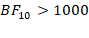
Mean and standard deviation of error rate and IES for each illusion type and strength condition. Note that all differences between adjacent ilustion strength conditions are significant (BF > 1000).
|
Illusion |
Error Rate - Congruent |
Error Rate - Mild |
Error Rate - Strong |
IES - Congruent |
IES - Mild |
IES - Strong |
|
Ebbinghaus |
3.40% ± 4% |
15.09% ± 8% |
40.20% ± 15% |
0.78 ± 0.20 |
1.01 ± 0.32 |
1.70 ± 0.99 |
|
Müller-Lyer |
0.94% ± 1% |
25.22% ± 7% |
62.53% ± 12% |
0.65 ± 0.14 |
1.11 ± 0.29 |
2.82 ± 1.08 |
|
Vertical–Horizontal |
2.85% ± 2% |
19.92% ± 10% |
52.99% ± 17% |
0.69 ± 0.19 |
1.04 ± 0.30 |
2.45 ± 1.70 |
The 10 items forming the PCS
score yielded acceptable consistency ( 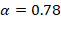
For the illusion scores, the registered plan was to first evaluate the possibility of collapsing across Mild and Strong illusion strength conditions by inspecting the correlations between them. However, they yielded an inconsistent pattern of results, with some correlations being above the registered threshold (r > .50) and others falling below it, without any obvious pattern (see correlation tables in the full analysis report on the project’s GitHub repository) with respect to specific illusions or outcome (error rate or IES). Consequently, we decided to present them separately in the main analysis, although results with the aggregated scores are included on the project’s GitHub repository for comprehensiveness, yielding identical results.
Consistency analyses between the 3 illusions were
conducted as registered, using Cronbach’s alpha. Error rate consistency was low
(Mild: 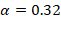 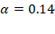 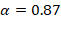 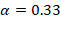
Bayesian correlations were conducted to assess the relationship between illusion sensitivity (error rate and IES) and both PCS scores and the psychoticism facet of the PID-5.
All correlations between illusion sensitivity
indices and the PCS score yielded Bayes factors below 3 (with the exception of
the error rate for Vertical-Horizontal at Mild illusion strength, 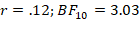 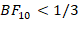 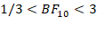
Similarly, all BFs for the relationship between illusion sensitivity and the psychoticism facet of the PID-5 were below 3, indicating no substantial evidence in favour of the second registered hypothesis. The results are therefore not aligned with the hypothesised positive association.
The study involved three visual illusions, in which participants were instructed to respond as quickly as possible without making errors. Each illusion included two manipulated parameters: strength (e.g., the angle of the outward- or inward-pointing arrow-like fins in the Müller-Lyer illusion) and difficulty (e.g., the difference in line lengths in the Müller-Lyer illusion).
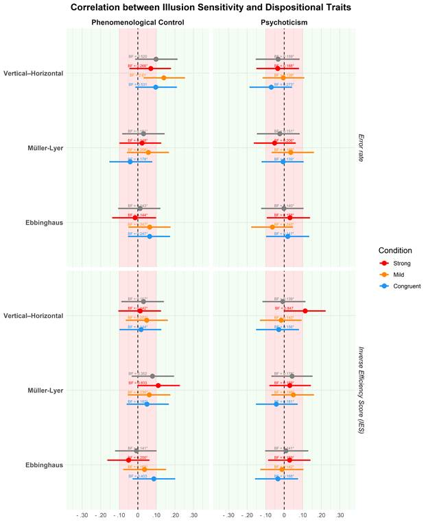
To ensure the robustness of these findings to various analysis decisions, we additionally computed the correlations with variant scores of the illusion game, namely with outcomes collapsed across illusion strength (Mild and Strong together) and with outcomes computed separately for each difficulty level (i.e., Easy and Hard). This multiverse approach confirmed the registered analysis, with no changes in the observed pattern of null findings.
This section will be completed
after data is collected.
This study aimed to replicate previous findings indicating (1) an absence of a relationship between visual illusion sensitivity and phenomenological control (Lush et al., 2022), and (2) the existence of a positive relationship between illusion sensitivity and psychoticism (Makowski et al., 2023). However, pre-registered Bayesian correlation analyses suggested an absence of a relationship between illusion sensitivity and both phenomenological control and psychoticism, supporting only the first hypothesis.
The present findings provide compelling evidence replicating Lush et al. (2022), confirming the absence of a relationship between trait phenomenological control (PC) and visual illusion sensitivity. Crucially, while previous research relied largely on subjective metacognitive judgments, our use of the Illusion Game paradigm extends this null finding to a direct, behavioral measure of perceptual interference across multiple illusion types. This persistent lack of association supports the cognitive impenetrability of visual illusions. Although both PC and illusion susceptibility can be conceptualized as top-down processes, our results suggest they operate at different levels of the cognitive hierarchy. The perceptual priors assumed to drive illusion sensitivity might be organized in a modular and encapsulated fashion. Consequently, even individuals with a high capacity to alter their subjective experience in response to goals or expectations (high PC) are unable to exert high-level, goal-directed control over these low-level perceptual inferences. In practice, this suggests that the trait capacity to manipulate one’s phenomenology is insufficient to override an illusion’s behavioural interference.
In contrast to our registered hypothesis, we found no evidence of an association between visual illusion sensitivity and the psychoticism facet of the PID-5. This result was unexpected, given the literature linking schizophrenia-spectrum traits and schizotypy to reduced susceptibility to visual illusions, a phenomenon often attributed to the reduced precision of perceptual priors within predictive coding frameworks. However, this discrepancy may be driven by how individual differences were operationalized in the current study. For instance, whereas Makowski et al. (2023) measured sensitivity across an aggregate of 10 different visual illusions, the current procedure was streamlined to include only three, and analyzed the relationship with psychoticism with each illusion individually, we may have lacked the statistical breadth required to extract a robust, common “illusion sensitivity” factor. Conceptually, we could hypothesize that the task-performance on any single illusion is driven by a combination of illusion-specific factors (e.g., the particular perceptual properties and localized prior-systems engaged by that specific visual configuration) and illusion-general factors (an overarching, trait-level characteristic tapped into during illusory perceptual interference). When analyzing specific illusions in isolation, the illusion-specific factors might overweigh the common component, potentially masking associations with broad personality constructs. However, this assumption is challenged by the fact that the internal consistency (i.e., the inter-correlation) between the three illusions in our sample was remarkably low, inconsistent at first glance with the notion of a common “illusion sensitivity” factor. This lack of coherence might result from a compounding of issues related to both the low number of illusions, as well as the specific measurement indices utilized.
Indeed, it is important to underline that the above findings and hypotheses are predicated on one critical assumption: that the outcome measures used in the current study (error rate and IES) are valid and sensitive indices to the individual differences in illusion sensitivity. Previous studies that successfully detected relationships with personality traits, such as Makowski et al. (2023), utilized indices derived from participant-specific parameters extracted from group-level hierarchical Bayesian General Additive Models (GAMs). In contrast, the current pre-registered analysis intentionally relied on rather crude summary measures. This critical methodological trade-off regarding how perceptual interference is quantified was adopted as complex computational models, while sensitive, carry significant drawbacks. For instance, they are computationally challenging and complex, and the resulting individual indices are not easily reproducible and replicable (as the estimates are inherently dependent on a bespoke parent model estimated from a specific dataset). Moreover, they are inherently limited by the appropriateness of the parent model as an accurate representation of the underlying data-generating process, which as noted by Makowski et al. (2023), is not yet established. In particular, while the GAMs used are great models to describe complex, potentially non-linear, patterns and relationships, they did not account for the interaction between speed and accuracy, which might be an important aspect of illusion-related perceptual interference effects. But while our chosen summary metrics provided a straightforward, reproducible index of performance, collapsing the variance across task difficulty, illusion strength, and speed-accuracy trade-offs might have stripped away the nuanced resolution required to detect the subtle, low-level individual differences associated with personality-level characteristics.
Another important consideration for contextualizing these findings lies in the specific cognitive demands of the Illusion Game and the distinction between trait and state phenomenological control. In our paradigm, participants were explicitly motivated to respond as quickly and accurately as possible, effectively incentivizing them to actively inhibit or “resist” the illusory interference. This voluntary, goal-directed attempt to suppress a visual bias likely mobilizes distinct cognitive mechanisms compared to contexts where individuals are simply invited to passively experience or contemplate an illusion. In such contemplative settings, individuals might even implicitly magnify the illusory effect for aesthetic or psychological engagement. Furthermore, the present study measured trait phenomenological control, the baseline capacity for altering subjective experience, but did not provide an explicit induction or suggestion to alter the perception of the stimuli (i.e., state phenomenological control). Typical PC tasks assess the ability to generate or facilitate a suggested experience (e.g., feeling a heavy arm), whereas our task required the suppression of a bottom-up perceptual signal. It remains an open question whether a strong, context-specific suggestion (e.g., “you will see the lines exactly as their physical length dictates”) could mobilize state phenomenological control sufficiently to penetrate these encapsulated perceptual priors. Consequently, our results should be over-generalized and are best framed specifically as suggesting that high trait capacity for phenomenological control does not automatically confer an enhanced ability to actively inhibit perceptual illusions under strict, performance-driven task demands.
In summary, the present study reinforces the view that visual illusions are highly modular, operating to a large extent independently of our trait-level capacity to alter subjective phenomenology. However, our findings also highlight a critical methodological bottleneck in the study of perceptual individual differences. The lack of correlation between illusion sensitivity and psychoticism, coupled with low inter-illusion consistency, suggests that simple summary metrics derived from a small subset of illusions are insufficient to capture broad perceptual traits. Future research aiming to map low-level perceptual priors onto higher-order personality or psychopathological constructs must bridge the gap between reproducibility and modeling sensitivity. This could involve utilizing computational frameworks that explicitly model the speed-accuracy trade-off, such as Drift Diffusion Models (DDMs), to disentangle true perceptual bias from response impulsivity. Furthermore, developing standardized, multi-illusion batteries will be essential for successfully isolating a common, trait-level “illusion sensitivity” factor from the noise of illusion-specific variance. Until such high-resolution, reliable metrics are established, the subtle links between subclinical maladaptive traits and predictive coding parameters might remain difficult to capture.
All the study materials, experiment,
data, and analysis isare available on
GitHub.
[For the review process the pcs materials, the illusion game, and the analyses
scripts can be accessed here: at https://github.com/RealityBending/IllusionGamePhenomenologicalControl.
This
study was pre-registered as a Registered Report (https://osf.io/da3u6/?view_only=247d4efa1afe456aa07662732946d4e6. Note this
link will be replaced with the GitHub page of the current project upon
completion of the review process to ensure continued anonymisation].kvjnm)
following Stage 1 in-principle acceptance on the 5/12/2025.
We would like to thank Oliver
Collins for his help in the last mile of this project, An Shu Te
for her help in setting it up the project,
Ryan Scott for his help in implementing the phenomenological control scale, and
Zoltan Dienes for his input, feedback and guidance.
Cohen, J. (2013). Statistical power analysis for the behavioral sciences. routledge.
Costa, A. L. L., Costa, D. L., Pessoa, V. F., Caixeta, F. V., & Maior, R. S. (2023). Systematic review of visual illusions in schizophrenia. Schizophrenia Research, 252, 13–22. https://doi.org/10.1016/j.schres.2022.12.030
De Leeuw, J. R. (2023). DataPipe: Born-open data collection for online experiments. Behavior Research Methods, 56(3), 2499–2506. https://doi.org/10.3758/s13428-023-02161-x
Dienes, Z., Lush, P., Palfi, B., Roseboom, W., Scott, R., Parris, B., Seth, A., & Lovell, M. (2022). Phenomenological control as cold control. Psychology of Consciousness: Theory, Research, and Practice, 9(2), 101–116. https://doi.org/10.1037/cns0000230
Friston, K. (2010). The free-energy principle: a unified brain theory? Nature Reviews Neuroscience, 11(2), 127–138. https://doi.org/10.1038/nrn2787
Gershman, S. J., Vul, E., & Tenenbaum, J. B. (2012). Multistability and Perceptual Inference. Neural Computation, 24(1), 1–24. https://doi.org/10.1162/neco_a_00226
Gori, S., Molteni, M., & Facoetti, A. (2016). Visual illusions: An interesting tool to investigate developmental dyslexia and autism spectrum disorder. Frontiers in Human Neuroscience, 10. https://doi.org/10.3389/fnhum.2016.00175
Krueger, R. F., Eaton, N. R., Derringer, J., Markon, K. E., Watson, D., & Skodol, A. E. (2011). Personality inDSM5:Helping Delineate Personality Disorder Content and Framing the Metastructure. Journal of Personality Assessment, 93(4), 325–331. https://doi.org/10.1080/00223891.2011.577478
Lüdecke, D., Ben-Shachar, M. S., Patil, I., & Makowski, D. (2020). Extracting, computing and exploring the parameters of statistical models using r. 5, 2445. https://doi.org/10.21105/joss.02445
Lüdecke, D., Ben-Shachar, M. S., Patil, I., Wiernik, B. M., Bacher, E., Thériault, R., & Makowski, D. (2022). Easystats: Framework for easy statistical modeling, visualization, and reporting. https://easystats.github.io/easystats/
Lush, P., Moga, G., McLatchie, N., & Dienes, Z. (2018). The Sussex-Waterloo Scale of Hypnotizability (SWASH): measuring capacity for altering conscious experience. Neuroscience of Consciousness, 2018(1). https://doi.org/10.1093/nc/niy006
Lush, P., Scott, R. B., Seth, A. K., & Dienes, Z. (2021). The Phenomenological Control Scale: Measuring the Capacity for Creating Illusory Nonvolition, Hallucination and Delusion. Collabra: Psychology, 7(1). https://doi.org/10.1525/collabra.29542
Lush, P., Seth, A., Dienes, Z., & Scott, R. B. (2022). Trait phenomenological control in top-down and bottom-up effects: ASMR, visually evoked auditory response and the müller-lyer illusion. http://dx.doi.org/10.31234/osf.io/hw4y9
Makowski, D., Ben-Shachar, M. S., & Lüdecke, D. (2019). bayestestR: Describing effects and their uncertainty, existence and significance within the bayesian framework. 4, 1541. https://doi.org/10.21105/joss.01541
Makowski, D., Lau, Z. J., Pham, T., Paul Boyce, W., & Annabel Chen, S. H. (2021). A Parametric Framework to Generate Visual Illusions Using Python. Perception, 50(11), 950–965. https://doi.org/10.1177/03010066211057347
Makowski, D., Te, A. S., Kirk, S., Liang, N. Z., & Chen, S. H. A. (2023). A novel visual illusion paradigm provides evidence for a general factor of illusion sensitivity and personality correlates. Scientific Reports, 13(1). https://doi.org/10.1038/s41598-023-33148-5
Makowski, D., Wiernik, B. M., Patil, I., Lüdecke, D., & Ben-Shachar, M. S. (2022). Correlation: Methods for correlation analysis. https://CRAN.R-project.org/package=correlation
Mitchell, P., Mottron, L., Soulières, I., & Ropar, D. (2010). Susceptibility to the Shepard illusion in participants with autism: reduced top-down influences within perception? Autism Research, 3(3), 113–119. https://doi.org/10.1002/aur.130
Morey, R. D., & Rouder, J. N. (2018). BayseFactor: Computation of bayes factors for common designs.
Morey, R. D., & Rouder, J. N. (2024). BayesFactor: Computation of bayes factors for common designs. https://CRAN.R-project.org/package=BayesFactor
Notredame, C.-E., Pins, D., Deneve, S., & Jardri, R. (2014). What visual illusions teach us about schizophrenia. Frontiers in Integrative Neuroscience, 8. https://doi.org/10.3389/fnint.2014.00063
Palmer, C. J., Lawson, R. P., & Hohwy, J. (2017). Bayesian approaches to autism: Towards volatility, action, and behavior. Psychological Bulletin, 143(5), 521–542. https://doi.org/10.1037/bul0000097
Patil, I., Makowski, D., Ben-Shachar, M. S., Wiernik, B. M., Bacher, E., & Lüdecke, D. (2022). Datawizard: An r package for easy data preparation and statistical transformations. 7, 4684. https://doi.org/10.21105/joss.04684
Shoshina, I. I., & Shelepin, Yu. E. (2014). Effectiveness of Discrimination of the Sizes of Line Segments by Humans with Different Cognitive Style Parameters. Neuroscience and Behavioral Physiology, 44(7), 748–753. https://doi.org/10.1007/s11055-014-9978-2
Sundareswara, R., & Schrater, P. R. (2008). Perceptual multistability predicted by search model for Bayesian decisions. Journal of Vision, 8(5), 12. https://doi.org/10.1167/8.5.12
Thériault, R., Ben-Shachar, M. S., Patil, I., Lüdecke, D., Wiernik, B. M., & Makowski, D. (2024). Check your outliers! An introduction to identifying statistical outliers in R with easystats. Behavior Research Methods. https://doi.org/10.3758/s13428-024-02356-w
Todorović, D. (2020). What Are Visual Illusions? Perception, 49(11), 1128–1199. https://doi.org/10.1177/0301006620962279
Wickham, H., Averick, M., Bryan, J., Chang, W., McGowan, L. D., François, R., Grolemund, G., Hayes, A., Henry, L., Hester, J., Kuhn, M., Pedersen, T. L., Miller, E., Bache, S. M., Müller, K., Ooms, J., Robinson, D., Seidel, D. P., Spinu, V., … Yutani, H. (2019). Welcome to the tidyverse. 4, 1686. https://doi.org/10.21105/joss.01686